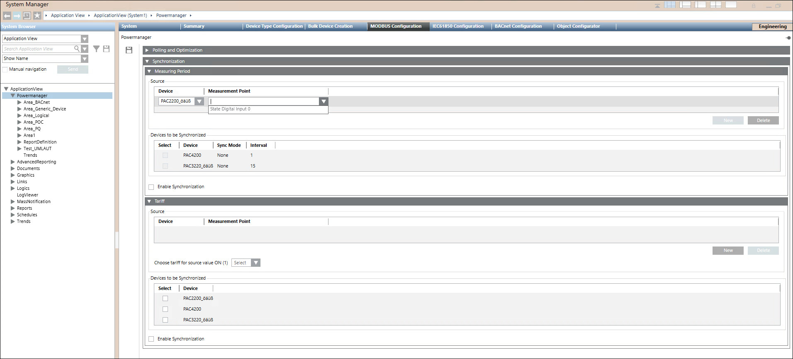

Synchronize the measuring periods of devices in Powermanager
- Ensure PAC meter data and time is synchronized with Powermanager server (not required for PAC3200 device).
- Ensure Powerdemand Synchronization mode is set to synchronization via bus.
- System Manager is in Engineering mode.
- Select Application view > Powermanager > Modbus Configuration tab > Synchronization expander > Measuring Period expander.
- Navigate to Source section and click New.
- Select a Device and Measurement Point from the drop down list.

- Navigate to Devices to be Synchronized section and select the required device from the list.
- Check-in the Enable Synchronization check box.
- Click Save.
- Activate the digital input on the source device. Upon activation, synchronize the measurement periods of all selected devices with the PC date and time.